<!DOCTYPE html><html lang="[&quot;zh-CN&quot;,&quot;en&quot;,&quot;default&quot;]"><head><meta charset="UTF-8"><meta http-equiv="X-UA-Compatible" content="IE=edge"><meta name="viewport" content="width=device-width, initial-scale=1, maximum-scale=1"><meta name="description" content="小飞哥的个人博客主页"><meta name="keywords" content=""><meta name="author" content="flueky"><meta name="copyright" content="flueky"><title>Android 程序猿秘籍 | Flueky 技术小站</title><link rel="shortcut icon" href="/test/melody-favicon.ico"><link rel="stylesheet" href="/test/css/index.css?version=1.9.1"><link rel="stylesheet" href="https://cdn.jsdelivr.net/npm/font-awesome@latest/css/font-awesome.min.css?version=1.9.1"><meta name="format-detection" content="telephone=no"><meta http-equiv="x-dns-prefetch-control" content="on"><link rel="dns-prefetch" href="https://cdn.jsdelivr.net"><meta http-equiv="Cache-Control" content="no-transform"><meta http-equiv="Cache-Control" content="no-siteapp"><script>var GLOBAL_CONFIG = { 
  root: '/test/',
  algolia: undefined,
  localSearch: undefined,
  copy: {
    success: 'Copy successfully',
    error: 'Copy error',
    noSupport: 'The browser does not support'
  },
  hexoVersion: '6.3.0'
} </script><meta name="generator" content="Hexo 6.3.0"></head><body><i class="fa fa-arrow-right" id="toggle-sidebar" aria-hidden="true"></i><div id="sidebar" data-display="false"><div class="author-info"><div class="author-info__avatar text-center"></div><div class="author-info__name text-center">flueky</div><div class="author-info__description text-center">小飞哥的个人博客主页</div><hr><div class="author-info-articles"><a class="author-info-articles__archives article-meta" href="/test/archives"><span class="pull-left">Articles</span><span class="pull-right">63</span></a><a class="author-info-articles__tags article-meta" href="/test/tags"><span class="pull-left">Tags</span><span class="pull-right">20</span></a><a class="author-info-articles__categories article-meta" href="/test/categories"><span class="pull-left">Categories</span><span class="pull-right">11</span></a></div></div></div><nav class="no-bg" id="nav"><div id="page-header"><span class="pull-left"> <a id="site-name" href="/test/">Flueky 技术小站</a></span><i class="fa fa-bars toggle-menu pull-right" aria-hidden="true"></i><span class="pull-right"></span></div><div id="site-info"><div id="site-title">Flueky 技术小站</div><div id="site-sub-title">Android 程序猿秘籍</div></div></nav><div id="content-outer"><div class="layout" id="content-inner"><div class="recent-post-item article-container"><a class="article-title" href="/test/003/">给AndroidStudio工程添加依赖</a><time class="post-meta__date"><i class="fa fa-calendar" aria-hidden="true"></i> 2018-12-01</time><span class="article-meta"><span class="article-meta__separator">|</span><i class="fa fa-inbox article-meta__icon" aria-hidden="true"></i><a class="article-meta__categories" href="/test/categories/Android/">Android</a><i class="fa fa-angle-right" aria-hidden="true"></i><i class="fa fa-inbox article-meta__icon" aria-hidden="true"></i><a class="article-meta__categories" href="/test/categories/%E5%BC%80%E5%8F%91%E5%B7%A5%E5%85%B7/">开发工具</a></span><span class="article-meta tags"><span class="article-meta__separator">|</span><i class="fa fa-tag article-meta__icon" aria-hidden="true"></i><a class="article-meta__tags" href="/test/tags/AndroidStudio/">AndroidStudio</a></span><div class="content"><p>前一篇博客详细讲了怎样创建一个安卓工程，见[从零构建Android工程](&#x2F;001)，今天在它的基础上演示怎样对主工程添加依赖。</p></div><a class="more" href="/test/003/#more">Read more</a><hr></div><div class="recent-post-item article-container"><a class="article-title" href="/test/002/">Git常用命令</a><time class="post-meta__date"><i class="fa fa-calendar" aria-hidden="true"></i> 2018-11-30</time><span class="article-meta"><span class="article-meta__separator">|</span><i class="fa fa-inbox article-meta__icon" aria-hidden="true"></i><a class="article-meta__categories" href="/test/categories/%E5%BC%80%E5%8F%91%E5%B7%A5%E5%85%B7/">开发工具</a></span><span class="article-meta tags"><span class="article-meta__separator">|</span><i class="fa fa-tag article-meta__icon" aria-hidden="true"></i><a class="article-meta__tags" href="/test/tags/Git/">Git</a></span><div class="content"><h2 id="init"><a href="#init" class="headerlink" title="init"></a>init</h2><p>毫无疑问，这是学习<code>git</code>使用的第一个命令。在本地初始化<code>git</code>仓库。</p>
<figure class="highlight shell"><table><tr><td class="gutter"><pre><span class="line">1</span><br><span class="line">2</span><br></pre></td><td class="code"><pre><span class="line">cd Demo</span><br><span class="line">git init</span><br></pre></td></tr></table></figure>

<p>表示切换到<code>Demo</code>目录并在该目录初始化<code>git</code>仓库。会生成<code>.git</code>文件夹。</p>


<p>如图，是一个<code>Android</code>初始工程目录，创建<code>git</code>仓库后多出<code>.git</code>文件夹。</p>
<h2 id="status"><a href="#status" class="headerlink" title="status"></a>status</h2><p>查看仓库中文件状态。</p>
<figure class="highlight shell"><table><tr><td class="gutter"><pre><span class="line">1</span><br></pre></td><td class="code"><pre><span class="line">git status</span><br></pre></td></tr></table></figure>


<p>图中表示全部文件均未添加至仓库，无需要提交至仓库文件。</p>
<p>有些不需要提交至仓库的文件，可以添加到<code>.gitignore</code>文件中。</p>


<p><code>.gitignore</code>文件内容：</p>
<pre><code>.idea
.gradle
gradle
gradlew
gradlew.bat
local.properties
build
*.iml
</code></pre>
<h2 id="add"><a href="#add" class="headerlink" title="add"></a>add</h2><p>添加文件至仓库。</p>
<figure class="highlight shell"><table><tr><td class="gutter"><pre><span class="line">1</span><br><span class="line">2</span><br><span class="line">3</span><br><span class="line">4</span><br></pre></td><td class="code"><pre><span class="line">git add &lt;file&gt; # 添加一个文件至仓库</span><br><span class="line">git add &lt;file1&gt; &lt;file2&gt;... # 添加多个文件至仓库</span><br><span class="line">git add . # 添加全部文件至仓库</span><br><span class="line">git add -f &lt;file&gt; # 强制将已忽略的文件添加至仓库</span><br></pre></td></tr></table></figure>


<p>可以每次只添加一个文件（夹），也可以每次添加多个文件（夹）。甚至可以使用<code>git add . </code>添加全部文件（夹）至仓库。</p>
<p>最新添加至仓库的文件（夹）会有<code>new file</code>标记。</p>
<p>在未commit之前，修改文件，也能看见修改标记。</p>


<h2 id="commit"><a href="#commit" class="headerlink" title="commit"></a>commit</h2><p>提交文件至仓库。</p>
<figure class="highlight shell"><table><tr><td class="gutter"><pre><span class="line">1</span><br><span class="line">2</span><br></pre></td><td class="code"><pre><span class="line">git commit -m 描述 #提交已在仓中的文件，不包括修改的内容</span><br><span class="line">git commit -am 描述 #提交已在仓库中的文件，包括修改的内容</span><br></pre></td></tr></table></figure>

<p>创建三种场景：</p>
<ol>
<li>三个新文件。</li>
<li>其中一个文件修改过。</li>
<li>还有个文件夹未添加至版本库。</li>
</ol>


<p>执行commit命令之后，再次查看提交前后的状态发现，修改的文件和为添加至版本库的文件没有提交。准确说，修改文件中的修改内容未提交至版本库。</p>
<h2 id="log"><a href="#log" class="headerlink" title="log"></a>log</h2><p>提交记录</p>
<figure class="highlight shell"><table><tr><td class="gutter"><pre><span class="line">1</span><br><span class="line">2</span><br></pre></td><td class="code"><pre><span class="line">git log # 查看提交记录</span><br><span class="line">git log --pretty=oneline # 查看精简后的提交记录</span><br></pre></td></tr></table></figure>


<p>每条提交记录都对应一条40字节的id，该id在后面有很大用途。</p>
<h2 id="branch"><a href="#branch" class="headerlink" title="branch"></a>branch</h2><p>分支管理</p>
<figure class="highlight shell"><table><tr><td class="gutter"><pre><span class="line">1</span><br><span class="line">2</span><br><span class="line">3</span><br><span class="line">4</span><br><span class="line">5</span><br></pre></td><td class="code"><pre><span class="line">git branch # 查看全部分支，当前分支会有标记</span><br><span class="line">git branch name # 创建名称为name的分支</span><br><span class="line">git checkout name # 将分支切换到name</span><br><span class="line">git checkout -b name # 创建并切换到name分支</span><br><span class="line">git branch -d name # 删除name分支</span><br></pre></td></tr></table></figure>


<p>图中依次显示了上述指令用法。需要注意，删除指定分支时，不可以删除被<code>checkout</code>的分支。</p>
<h2 id="tag"><a href="#tag" class="headerlink" title="tag"></a>tag</h2><p>标签管理</p>
<figure class="highlight shell"><table><tr><td class="gutter"><pre><span class="line">1</span><br><span class="line">2</span><br><span class="line">3</span><br><span class="line">4</span><br><span class="line">5</span><br><span class="line">6</span><br></pre></td><td class="code"><pre><span class="line">git tag # 查看全部标签</span><br><span class="line">git tag name # 创建name标签</span><br><span class="line">git tag name -m 描述 # 创建name标签，并指定描述</span><br><span class="line">git tag name id # 在指定的提交id上创建标签,id 只需要写前几位</span><br><span class="line">git tag -d name # 删除name标签</span><br><span class="line"></span><br></pre></td></tr></table></figure>


<p>演示了创建标签，在指定id上创建标签，查看标签，删除标签。</p>


<p>查看标签信息。</p>


<p>查看自定义描述的标签信息。</p>
<h2 id="remote"><a href="#remote" class="headerlink" title="remote"></a>remote</h2><figure class="highlight shell"><table><tr><td class="gutter"><pre><span class="line">1</span><br><span class="line">2</span><br><span class="line">3</span><br><span class="line">4</span><br><span class="line">5</span><br><span class="line">6</span><br><span class="line">7</span><br><span class="line">8</span><br></pre></td><td class="code"><pre><span class="line"><span class="meta prompt_"># </span><span class="language-bash">将本地仓库关联到远程库</span></span><br><span class="line"><span class="meta prompt_"># </span><span class="language-bash">远程库名称 origin</span></span><br><span class="line"><span class="meta prompt_"># </span><span class="language-bash">git@github.com:user/project.git表示远程仓库地址。</span></span><br><span class="line">git remote add origin git@github.com:user/project.git</span><br><span class="line"><span class="meta prompt_"># </span><span class="language-bash">查看本地仓库关联的远程仓库</span></span><br><span class="line">git remote -v </span><br><span class="line"><span class="meta prompt_"># </span><span class="language-bash">删除远程仓库</span></span><br><span class="line">git remote rm origin</span><br></pre></td></tr></table></figure>

<p>如果需要同时关联多个远程仓库，如 GitHub 和 码云。</p>
<figure class="highlight shell"><table><tr><td class="gutter"><pre><span class="line">1</span><br><span class="line">2</span><br><span class="line">3</span><br><span class="line">4</span><br></pre></td><td class="code"><pre><span class="line"><span class="meta prompt_"># </span><span class="language-bash">远程仓库名 github 关联到 github 仓库</span></span><br><span class="line">git remote add github git@github.com:user/project.git</span><br><span class="line"><span class="meta prompt_"># </span><span class="language-bash">远程仓库名 gitee 关联到 gitee 仓库</span></span><br><span class="line">git remote add gitee git@gitee.com:user/project.git</span><br></pre></td></tr></table></figure>

<h2 id="push"><a href="#push" class="headerlink" title="push"></a>push</h2><figure class="highlight shell"><table><tr><td class="gutter"><pre><span class="line">1</span><br><span class="line">2</span><br></pre></td><td class="code"><pre><span class="line">git push origin master # 将 master 分支推送到远程库</span><br><span class="line">git push --tags # 推送标签到远程服务</span><br></pre></td></tr></table></figure>

<h2 id="pull"><a href="#pull" class="headerlink" title="pull"></a>pull</h2><figure class="highlight shell"><table><tr><td class="gutter"><pre><span class="line">1</span><br><span class="line">2</span><br></pre></td><td class="code"><pre><span class="line">// 拉取远程分支 branch1 到本地分支 branch2</span><br><span class="line">git pull origin branch1:branch2</span><br></pre></td></tr></table></figure>


</div><hr></div><div class="recent-post-item article-container"><a class="article-title" href="/test/001/">从零构建Android工程</a><time class="post-meta__date"><i class="fa fa-calendar" aria-hidden="true"></i> 2018-11-29</time><span class="article-meta"><span class="article-meta__separator">|</span><i class="fa fa-inbox article-meta__icon" aria-hidden="true"></i><a class="article-meta__categories" href="/test/categories/Android/">Android</a><i class="fa fa-angle-right" aria-hidden="true"></i><i class="fa fa-inbox article-meta__icon" aria-hidden="true"></i><a class="article-meta__categories" href="/test/categories/%E5%BC%80%E5%8F%91%E5%B7%A5%E5%85%B7/">开发工具</a></span><span class="article-meta tags"><span class="article-meta__separator">|</span><i class="fa fa-tag article-meta__icon" aria-hidden="true"></i><a class="article-meta__tags" href="/test/tags/AndroidStudio/">AndroidStudio</a></span><div class="content"><h2 id="1-新建工程目录"><a href="#1-新建工程目录" class="headerlink" title="1 新建工程目录"></a>1 新建工程目录</h2><p>新建文件夹<code>Demo</code>，用<code>AndroidStudio</code>打开。</p>
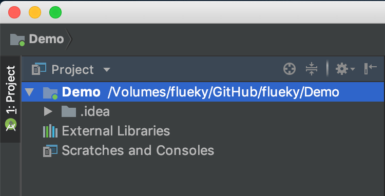

<p>新建<code>build.gradle</code>文件，添加如下内容：</p>
<figure class="highlight gradle"><table><tr><td class="gutter"><pre><span class="line">1</span><br><span class="line">2</span><br><span class="line">3</span><br><span class="line">4</span><br><span class="line">5</span><br><span class="line">6</span><br><span class="line">7</span><br><span class="line">8</span><br><span class="line">9</span><br><span class="line">10</span><br></pre></td><td class="code"><pre><span class="line"><span class="keyword">buildscript</span> &#123;</span><br><span class="line">    <span class="keyword">repositories</span>&#123;</span><br><span class="line">        jcenter()</span><br><span class="line">        google()</span><br><span class="line">    &#125;</span><br><span class="line">    <span class="keyword">dependencies</span>&#123;</span><br><span class="line">        <span class="comment">// 目前最新build插件版本 3.2.1</span></span><br><span class="line">        <span class="keyword">classpath</span> <span class="string">&#x27;com.android.tools.build:gradle:3.2.1&#x27;</span></span><br><span class="line">    &#125;</span><br><span class="line">&#125;</span><br></pre></td></tr></table></figure>

<p>构建工程后如图：</p>
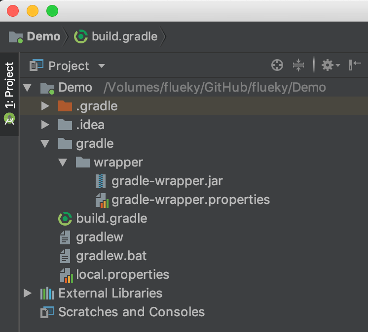

<p>自动生成的<code>gradle</code>文件夹及使用的<code>gradle</code>不建议修改。如想调降<code>gradle</code>版本，建议降低<code>build</code>插件版本。</p>
<h2 id="2-新建主module目录"><a href="#2-新建主module目录" class="headerlink" title="2 新建主module目录"></a>2 新建主module目录</h2><p>新建<code>settings.gradle</code>文件和<code>app</code>文件夹，并在<code>settings.gradle</code>文件中添加<code>include &#39;:app&#39;</code>,再次构建工程，<code>app</code>文件夹图标改变。</p>
<p>构建前：<br/><br>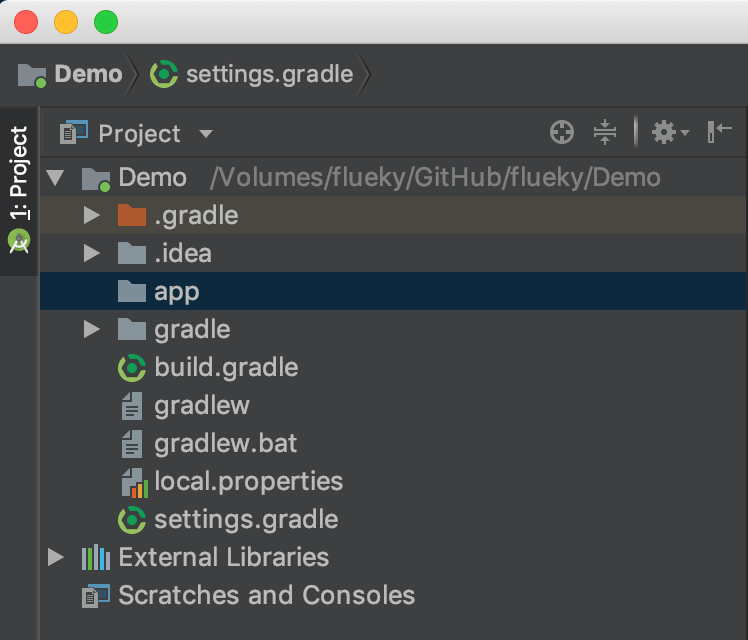<br/><br>构建后：<br/><br>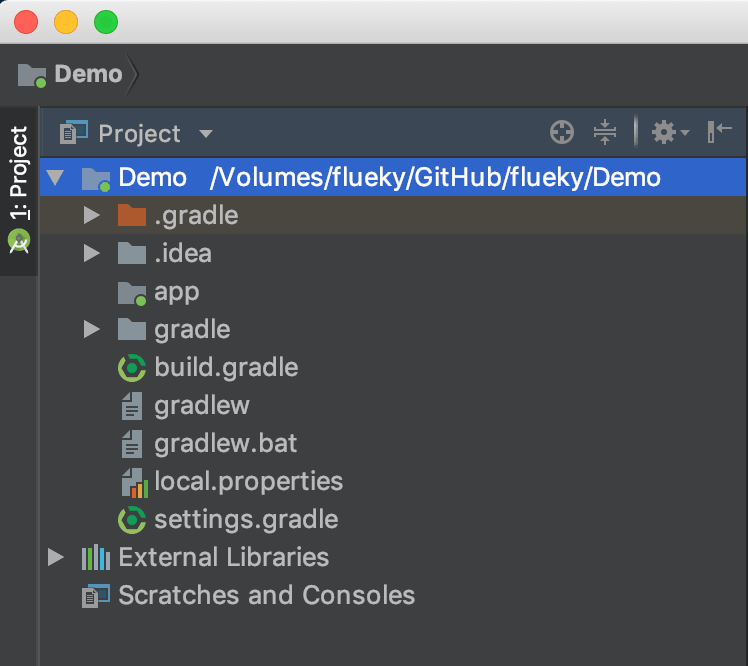<br/></p>
<p>在<code>app</code>目录下新建<code>build.gradle</code>文件，并添加如下内容：</p>
<figure class="highlight gradle"><table><tr><td class="gutter"><pre><span class="line">1</span><br><span class="line">2</span><br><span class="line">3</span><br><span class="line">4</span><br><span class="line">5</span><br></pre></td><td class="code"><pre><span class="line">apply plugin: <span class="string">&#x27;com.android.application&#x27;</span></span><br><span class="line"></span><br><span class="line">android&#123;</span><br><span class="line">    compileSdkVersion <span class="number">28</span> <span class="comment">//目前最新sdk 28</span></span><br><span class="line">&#125;</span><br></pre></td></tr></table></figure>

<p>在<code>app</code>目录下新建 <code>src</code>、<code>src/main</code>文件夹,并在<code>main</code>文件夹中新建<code>AndroidManifest.xml</code>文件，添加如下内容：</p>
<figure class="highlight xml"><table><tr><td class="gutter"><pre><span class="line">1</span><br><span class="line">2</span><br><span class="line">3</span><br><span class="line">4</span><br></pre></td><td class="code"><pre><span class="line"><span class="meta">&lt;?xml version=<span class="string">&quot;1.0&quot;</span> encoding=<span class="string">&quot;UTF-8&quot;</span> ?&gt;</span></span><br><span class="line"><span class="tag">&lt;<span class="name">manifest</span> <span class="attr">package</span>=<span class="string">&quot;com.flueky.demo&quot;</span>&gt;</span></span><br><span class="line"></span><br><span class="line"><span class="tag">&lt;/<span class="name">manifest</span>&gt;</span></span><br></pre></td></tr></table></figure>

<p>最后在工程<code>build.gradle</code>文件添加:</p>
<figure class="highlight gradle"><table><tr><td class="gutter"><pre><span class="line">1</span><br><span class="line">2</span><br><span class="line">3</span><br><span class="line">4</span><br><span class="line">5</span><br><span class="line">6</span><br><span class="line">7</span><br><span class="line">8</span><br><span class="line">9</span><br><span class="line">10</span><br><span class="line">11</span><br><span class="line">12</span><br><span class="line">13</span><br><span class="line">14</span><br><span class="line">15</span><br><span class="line">16</span><br></pre></td><td class="code"><pre><span class="line"><span class="keyword">buildscript</span> &#123;</span><br><span class="line">    <span class="keyword">repositories</span>&#123;</span><br><span class="line">        jcenter()</span><br><span class="line">        google()</span><br><span class="line">    &#125;</span><br><span class="line">    <span class="keyword">dependencies</span>&#123;</span><br><span class="line">        <span class="keyword">classpath</span> <span class="string">&#x27;com.android.tools.build:gradle:3.2.1&#x27;</span></span><br><span class="line">    &#125;</span><br><span class="line">&#125;</span><br><span class="line"><span class="comment">// 以下是添加部分，定义全部工程的资源库</span></span><br><span class="line"><span class="keyword">allprojects</span>&#123;</span><br><span class="line">    <span class="keyword">repositories</span>&#123;</span><br><span class="line">        jcenter()</span><br><span class="line">        google()</span><br><span class="line">    &#125;</span><br><span class="line">&#125;</span><br></pre></td></tr></table></figure>

<p>出现图中标志时，表示项目已经构建完成。添加默认启动<code>Activity</code>即可去掉  <font color='red'>✘</font> 号。</p>
<p>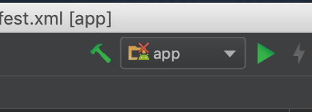<br/></p>
<h2 id="3-添加启动Activity"><a href="#3-添加启动Activity" class="headerlink" title="3 添加启动Activity"></a>3 添加启动Activity</h2><ol>
<li>在<code>app/src/main</code>目录下分别新建<code>java</code>和<code>res</code>文件夹。</li>
<li>在<code>java</code>目录下创建包名：<code>com.flueky.demo</code>，并创建<code>MainActivity</code>类。</li>
<li>在<code>res</code>目录加创建<code>layout</code>文件夹，并创建<code>activity_main.xml</code>布局。</li>
<li>在<code>AndroidManifest.xml</code>文件注册<code>MainActivity</code>。</li>
<li>给<code>MainActivity</code>添加启动<code>intent</code>。</li>
</ol>
<p>最终目录结构如图：<br/><br>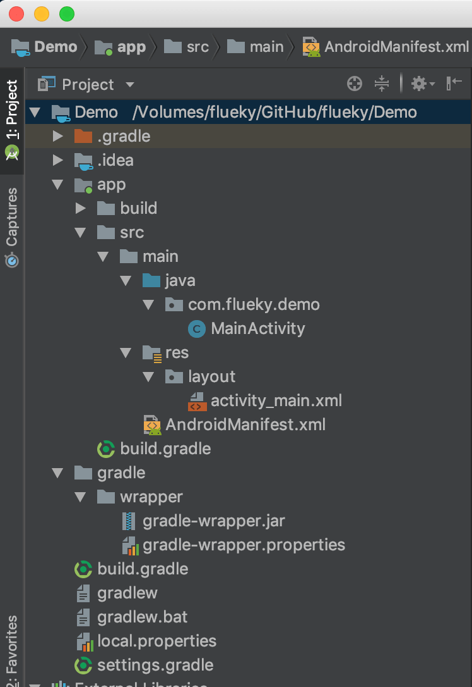</p>
<p><code>MainActivity</code>内容：<br/></p>
<figure class="highlight java"><table><tr><td class="gutter"><pre><span class="line">1</span><br><span class="line">2</span><br><span class="line">3</span><br><span class="line">4</span><br><span class="line">5</span><br><span class="line">6</span><br><span class="line">7</span><br><span class="line">8</span><br><span class="line">9</span><br><span class="line">10</span><br><span class="line">11</span><br><span class="line">12</span><br></pre></td><td class="code"><pre><span class="line"><span class="keyword">package</span> com.flueky.demo;</span><br><span class="line"></span><br><span class="line"><span class="keyword">import</span> android.app.Activity;</span><br><span class="line"><span class="keyword">import</span> android.os.Bundle;</span><br><span class="line"></span><br><span class="line"><span class="keyword">public</span> <span class="keyword">class</span> <span class="title class_">MainActivity</span> <span class="keyword">extends</span> <span class="title class_">Activity</span> &#123;</span><br><span class="line">    <span class="meta">@Override</span></span><br><span class="line">    <span class="keyword">protected</span> <span class="keyword">void</span> <span class="title function_">onCreate</span><span class="params">(Bundle savedInstanceState)</span> &#123;</span><br><span class="line">        <span class="built_in">super</span>.onCreate(savedInstanceState);</span><br><span class="line">        setContentView(R.layout.activity_main);</span><br><span class="line">    &#125;</span><br><span class="line">&#125;</span><br></pre></td></tr></table></figure>

<p><code>activity_main.xml</code>内容：</p>
<figure class="highlight xml"><table><tr><td class="gutter"><pre><span class="line">1</span><br><span class="line">2</span><br><span class="line">3</span><br><span class="line">4</span><br><span class="line">5</span><br><span class="line">6</span><br><span class="line">7</span><br><span class="line">8</span><br><span class="line">9</span><br><span class="line">10</span><br></pre></td><td class="code"><pre><span class="line"><span class="meta">&lt;?xml version=<span class="string">&quot;1.0&quot;</span> encoding=<span class="string">&quot;UTF-8&quot;</span> ?&gt;</span></span><br><span class="line"><span class="tag">&lt;<span class="name">LinearLayout</span> <span class="attr">xmlns:android</span>=<span class="string">&quot;http://schemas.android.com/apk/res/android&quot;</span></span></span><br><span class="line"><span class="tag">    <span class="attr">android:layout_width</span>=<span class="string">&quot;match_parent&quot;</span></span></span><br><span class="line"><span class="tag">    <span class="attr">android:layout_height</span>=<span class="string">&quot;match_parent&quot;</span>&gt;</span></span><br><span class="line"></span><br><span class="line">    <span class="tag">&lt;<span class="name">TextView</span></span></span><br><span class="line"><span class="tag">        <span class="attr">android:layout_width</span>=<span class="string">&quot;match_parent&quot;</span></span></span><br><span class="line"><span class="tag">        <span class="attr">android:layout_height</span>=<span class="string">&quot;wrap_content&quot;</span></span></span><br><span class="line"><span class="tag">        <span class="attr">android:text</span>=<span class="string">&quot;Hello World&quot;</span> /&gt;</span></span><br><span class="line"><span class="tag">&lt;/<span class="name">LinearLayout</span>&gt;</span></span><br></pre></td></tr></table></figure>

<p><code>AndroidManifest.xml</code>内容：</p>
<figure class="highlight xml"><table><tr><td class="gutter"><pre><span class="line">1</span><br><span class="line">2</span><br><span class="line">3</span><br><span class="line">4</span><br><span class="line">5</span><br><span class="line">6</span><br><span class="line">7</span><br><span class="line">8</span><br><span class="line">9</span><br><span class="line">10</span><br><span class="line">11</span><br><span class="line">12</span><br><span class="line">13</span><br><span class="line">14</span><br><span class="line">15</span><br><span class="line">16</span><br></pre></td><td class="code"><pre><span class="line"><span class="meta">&lt;?xml version=<span class="string">&quot;1.0&quot;</span> encoding=<span class="string">&quot;UTF-8&quot;</span> ?&gt;</span></span><br><span class="line"><span class="tag">&lt;<span class="name">manifest</span> <span class="attr">xmlns:android</span>=<span class="string">&quot;http://schemas.android.com/apk/res/android&quot;</span></span></span><br><span class="line"><span class="tag">    <span class="attr">package</span>=<span class="string">&quot;com.flueky.demo&quot;</span>&gt;</span></span><br><span class="line"></span><br><span class="line">    <span class="tag">&lt;<span class="name">application</span>&gt;</span></span><br><span class="line"></span><br><span class="line">        <span class="tag">&lt;<span class="name">activity</span> <span class="attr">android:name</span>=<span class="string">&quot;.MainActivity&quot;</span>&gt;</span></span><br><span class="line">            <span class="tag">&lt;<span class="name">intent-filter</span>&gt;</span></span><br><span class="line">                <span class="tag">&lt;<span class="name">action</span> <span class="attr">android:name</span>=<span class="string">&quot;android.intent.action.MAIN&quot;</span> /&gt;</span></span><br><span class="line">                <span class="tag">&lt;<span class="name">category</span> <span class="attr">android:name</span>=<span class="string">&quot;android.intent.category.LAUNCHER&quot;</span> /&gt;</span></span><br><span class="line">            <span class="tag">&lt;/<span class="name">intent-filter</span>&gt;</span></span><br><span class="line">        <span class="tag">&lt;/<span class="name">activity</span>&gt;</span></span><br><span class="line"></span><br><span class="line">    <span class="tag">&lt;/<span class="name">application</span>&gt;</span></span><br><span class="line"></span><br><span class="line"><span class="tag">&lt;/<span class="name">manifest</span>&gt;</span></span><br></pre></td></tr></table></figure>

<p>运行结果如图：<br/><br></p>
<h2 id="4-新建库module目录"><a href="#4-新建库module目录" class="headerlink" title="4 新建库module目录"></a>4 新建库module目录</h2><p>新建<code>library</code>文件夹，并在<code>settings.gradle</code>文件中添加<code>include &#39;:library&#39;</code>，构建后如下，注意<code>library</code>文件夹的标志。</p>
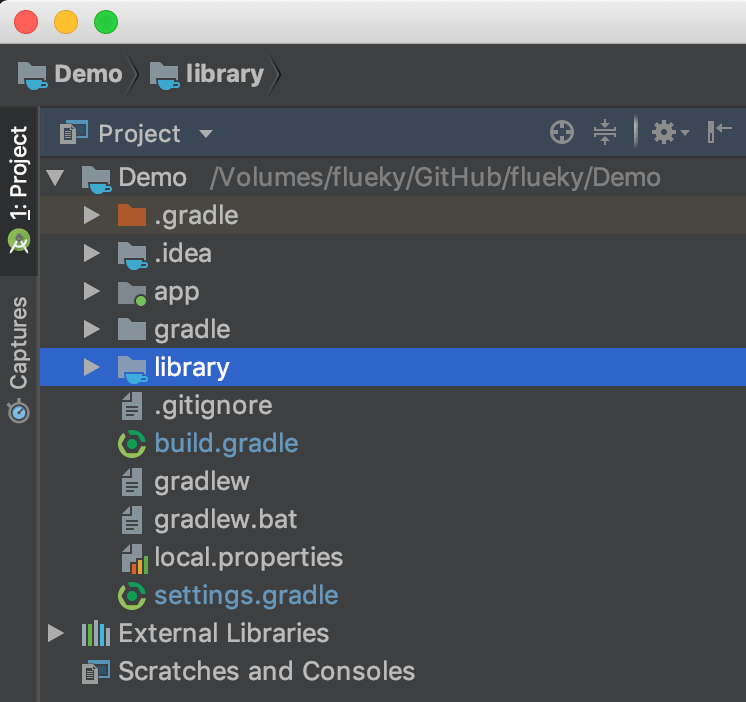

<p>同主<code>module</code>一样，创建<code>AndroidManifest.xml</code>文件和<code>build.gradle</code>文件。</p>
<p>编辑<code>AndroidManifest.xml</code>文件：</p>
<figure class="highlight xml"><table><tr><td class="gutter"><pre><span class="line">1</span><br><span class="line">2</span><br><span class="line">3</span><br><span class="line">4</span><br></pre></td><td class="code"><pre><span class="line"><span class="meta">&lt;?xml version=<span class="string">&quot;1.0&quot;</span> encoding=<span class="string">&quot;UTF-8&quot;</span> ?&gt;</span></span><br><span class="line"><span class="tag">&lt;<span class="name">manifest</span> <span class="attr">package</span>=<span class="string">&quot;com.flueky.library&quot;</span>&gt;</span></span><br><span class="line"></span><br><span class="line"><span class="tag">&lt;/<span class="name">manifest</span>&gt;</span></span><br></pre></td></tr></table></figure>

<p>编辑<code>build.gradle</code>文件：</p>
<figure class="highlight gradle"><table><tr><td class="gutter"><pre><span class="line">1</span><br><span class="line">2</span><br><span class="line">3</span><br><span class="line">4</span><br><span class="line">5</span><br></pre></td><td class="code"><pre><span class="line">apply plugin: <span class="string">&#x27;com.android.library&#x27;</span></span><br><span class="line"></span><br><span class="line">android &#123;</span><br><span class="line">    compileSdkVersion <span class="number">28</span></span><br><span class="line">&#125;</span><br></pre></td></tr></table></figure>

<p>在主<code>module</code>文件中，添加下面的代码进行关联。</p>
<pre><code>implementation project(&#39;:library&#39;)
</code></pre>
<h2 id="5-结束语"><a href="#5-结束语" class="headerlink" title="5 结束语"></a>5 结束语</h2><p><code>AndroidStudio</code>自带的创建项目功能，做的很好。能够帮助初学者最快速度的创建<code>Android</code>工程，编写此篇博客的目的在于，能够帮助初学者们更好的了解<code>Android</code>项目工程结构。最后，将此篇博客献给测试小伙伴们。你们距离程序猿，只差面向对象编程了。</p>
<p><strong>觉得有用？那打赏一个呗。[去打赏](&#x2F;donate&#x2F;)</strong></p>
</div><hr></div><div class="recent-post-item article-container"><a class="article-title" href="/test/101/">安装AndroidStudio</a><time class="post-meta__date"><i class="fa fa-calendar" aria-hidden="true"></i> 2018-08-02</time><span class="article-meta"><span class="article-meta__separator">|</span><i class="fa fa-inbox article-meta__icon" aria-hidden="true"></i><a class="article-meta__categories" href="/test/categories/%E5%BC%80%E5%8F%91%E5%B7%A5%E5%85%B7/">开发工具</a></span><span class="article-meta tags"><span class="article-meta__separator">|</span><i class="fa fa-tag article-meta__icon" aria-hidden="true"></i><a class="article-meta__tags" href="/test/tags/AndroidStudio/">AndroidStudio</a></span><div class="content"><p>公司准备招聘一批具备 Java 基础的实习生学习 Android 开发。因此，后续会出一系列的 Android 开发入门、基础、高级教程。那么，从第零步，搭建开发环境开始。由于 Android 是基于 Java 平台开发的，因此还需要[安装 Java 环境](&#x2F;blog&#x2F;2018-08-01)。</p></div><a class="more" href="/test/101/#more">Read more</a><hr></div><div class="recent-post-item article-container"><a class="article-title" href="/test/100/">安装Java环境-Windows</a><time class="post-meta__date"><i class="fa fa-calendar" aria-hidden="true"></i> 2018-08-01</time><span class="article-meta"><span class="article-meta__separator">|</span><i class="fa fa-inbox article-meta__icon" aria-hidden="true"></i><a class="article-meta__categories" href="/test/categories/%E5%BC%80%E5%8F%91%E5%B7%A5%E5%85%B7/">开发工具</a><i class="fa fa-angle-right" aria-hidden="true"></i><i class="fa fa-inbox article-meta__icon" aria-hidden="true"></i><a class="article-meta__categories" href="/test/categories/Java/">Java</a></span><div class="content"><h2 id="1-下载jdk"><a href="#1-下载jdk" class="headerlink" title="1 下载jdk"></a>1 下载jdk</h2><p><a target="_blank" rel="noopener" href="http://www.oracle.com/technetwork/java/javase/downloads/jdk8-downloads-2133151.html">jdk 8 下载链接</a></p>
<p><a target="_blank" rel="noopener" href="http://www.oracle.com/technetwork/java/javase/downloads/jdk10-downloads-4416644.html">jdk 10 下载链接</a></p>
<h2 id="2-安装jdk"><a href="#2-安装jdk" class="headerlink" title="2 安装jdk"></a>2 安装jdk</h2><p>双击下载下来的exe文件执行安装。安装过程截图如下：</p>
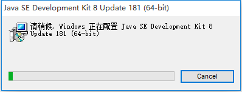
<br/>

<br/>
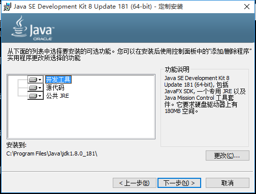
<br/>
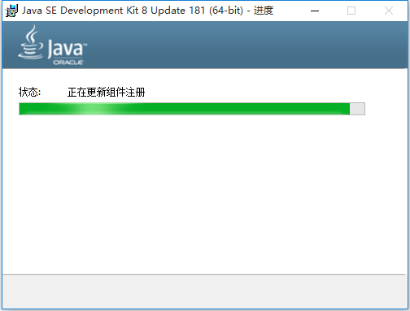
<br/>
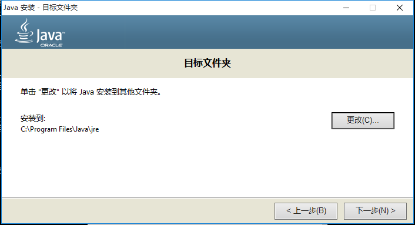
<br/>
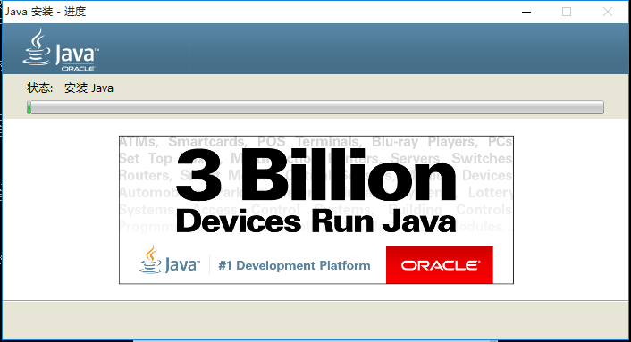
<br/>
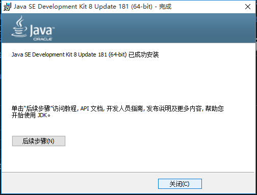


<p>安装后，使用快捷键 win+R 输入cmd 运行终端程序，在终端中 输入 <code>java -version</code> 校验安装结果。</p>
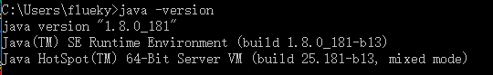

<p>如图所示，安装成功。</p>
<h2 id="3-配置环境变量"><a href="#3-配置环境变量" class="headerlink" title="3 配置环境变量"></a>3 配置环境变量</h2><ol>
<li>打开系统属性</li>
</ol>
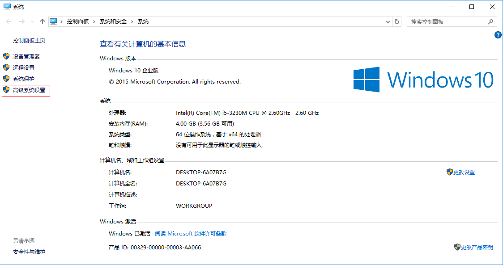

<ol start="2">
<li>点击高级系统设置</li>
</ol>
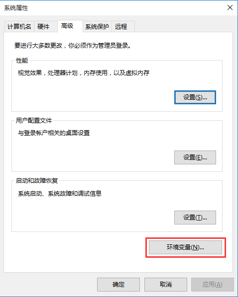

<ol start="3">
<li>点击环境变量</li>
</ol>
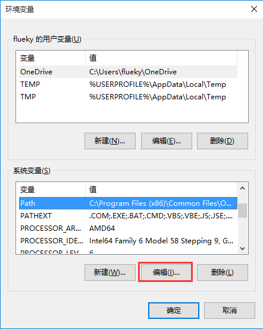

<ol start="4">
<li>在系统变量中新建变量</li>
</ol>
<p>新建<code>JAVA_HOME</code>变量，变量值是<code>jdk</code>安装目录。</p>
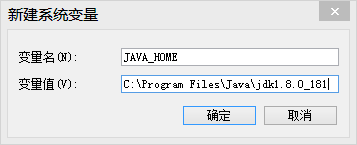

<ol start="5">
<li>在系统变量中选择Path变量</li>
</ol>
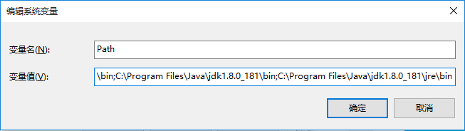

<ol start="6">
<li>编辑Path变量，在变量值的末尾添加下面的内容。</li>
</ol>
<blockquote>
<p>C:\Program Files\Java\jdk1.8.0_181\bin;C:\Program Files\Java\jdk1.8.0_181\jre\bin</p>
</blockquote>
<p>或者使用</p>
<blockquote>
<p>%JAVA_HOME%\bin;%JAVA_HOME%\jre\bin</p>
</blockquote>
<ol start="7">
<li>保存退出后，再在终端中依次输入 <code>javac</code>、<code>javah</code>校验环境变量是否修改成功。</li>
</ol>
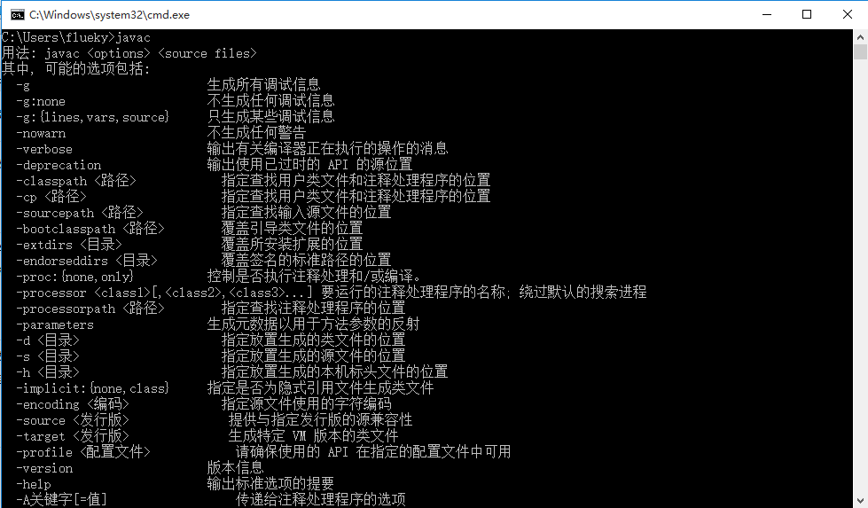

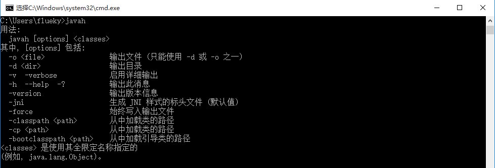

<h2 id="jdk-11"><a href="#jdk-11" class="headerlink" title="jdk 11"></a>jdk 11</h2><p>jdk 11 默认没有 <code>jre</code> 目录，需要手动生成。在 jdk 目录下执行下面的命令。</p>
<blockquote>
<p>bin\jlink.exe –module-path jmods –add-modules java.desktop –output jre</p>
</blockquote>
<p>jdk 8 之后，不再支持 <code>javah</code> 命令生成头文件，使用 <code>javac -h</code> 替换。</p>
<p><strong>觉得有用？那打赏一个呗。[去打赏](&#x2F;donate&#x2F;)</strong></p>
</div><hr></div><div class="recent-post-item article-container"><a class="article-title" href="/test/010/">Android 实现水波浪效果</a><time class="post-meta__date"><i class="fa fa-calendar" aria-hidden="true"></i> 2018-07-14</time><span class="article-meta"><span class="article-meta__separator">|</span><i class="fa fa-inbox article-meta__icon" aria-hidden="true"></i><a class="article-meta__categories" href="/test/categories/Android/">Android</a></span><span class="article-meta tags"><span class="article-meta__separator">|</span><i class="fa fa-tag article-meta__icon" aria-hidden="true"></i><a class="article-meta__tags" href="/test/tags/%E8%87%AA%E5%AE%9A%E4%B9%89View/">自定义View</a></span><div class="content"><p>讲真，这不算一个新的课题。早在几个月之前就已经有大神开源了水波浪效果的代码。由于工作关系，一直未能拜读。直至近期公司项目有需要，才决定去接触下该效果。</p></div><a class="more" href="/test/010/#more">Read more</a><hr></div><div class="recent-post-item article-container"><a class="article-title" href="/test/237/">自定义Android键盘</a><time class="post-meta__date"><i class="fa fa-calendar" aria-hidden="true"></i> 2018-04-26</time><span class="article-meta"><span class="article-meta__separator">|</span><i class="fa fa-inbox article-meta__icon" aria-hidden="true"></i><a class="article-meta__categories" href="/test/categories/Android/">Android</a></span><div class="content"><p>前段时间改造了公司的安全键盘，是基于<code>Dialog</code>和<code>Button</code>自定义的。也因此借机了解下 Android 平台提供的自定义键盘接口。主要有两个类：<code>Keyboard</code>和<code>KeyboardView</code>。很搞笑的是，百度出来<strong>自定义Android键盘</strong>（与<strong>自定义Android输入法</strong>不同）的文章千篇一律。</p></div><a class="more" href="/test/237/#more">Read more</a><hr></div><div class="recent-post-item article-container"><a class="article-title" href="/test/236/">用Shell批量删除AndroidStudio build目录</a><time class="post-meta__date"><i class="fa fa-calendar" aria-hidden="true"></i> 2018-04-12</time><span class="article-meta"><span class="article-meta__separator">|</span><i class="fa fa-inbox article-meta__icon" aria-hidden="true"></i><a class="article-meta__categories" href="/test/categories/Shell/">Shell</a></span><div class="content"><p>多数Android程序猿都有一个痛，使用AndroidStudio开发安卓项目时，build目录占用太多存储空间。在没有版本控制工具的情况下，一些没有经验的Android开发者会将自己的程序直接打包发送给别人。这样的代码包，少则几十兆，多则数百兆，其中多数都是build目录下的文件。（<strong>使用eclipse开发时，bin 目录和gen目录与之类似。</strong>）</p></div><a class="more" href="/test/236/#more">Read more</a><hr></div><div class="recent-post-item article-container"><a class="article-title" href="/test/235/">仿QQ空间的透明标题头</a><time class="post-meta__date"><i class="fa fa-calendar" aria-hidden="true"></i> 2017-11-03</time><span class="article-meta"><span class="article-meta__separator">|</span><i class="fa fa-inbox article-meta__icon" aria-hidden="true"></i><a class="article-meta__categories" href="/test/categories/Android/">Android</a></span><div class="content"><h2 id="1-目标"><a href="#1-目标" class="headerlink" title="1 目标"></a>1 目标</h2><p>先看看QQ空间的样式。</p>
<p><strong>透明背景标题头</strong></p>


<p><strong>白色背景标题头</strong></p>


<h2 id="2-思路"><a href="#2-思路" class="headerlink" title="2 思路"></a>2 思路</h2><p>滚动页面时，当背景头部消失后，标题背景变成白色。即计算滑动距离，根据距离计算需要变更标题背景的时机，标题浮动在滚动视图上面。布局有两种设计方法:</p>
<p>方案一：</p>
<figure class="highlight xml"><table><tr><td class="gutter"><pre><span class="line">1</span><br><span class="line">2</span><br><span class="line">3</span><br><span class="line">4</span><br><span class="line">5</span><br><span class="line">6</span><br><span class="line">7</span><br><span class="line">8</span><br><span class="line">9</span><br><span class="line">10</span><br><span class="line">11</span><br><span class="line">12</span><br></pre></td><td class="code"><pre><span class="line"><span class="tag">&lt;<span class="name">RelativeLayout</span>&gt;</span></span><br><span class="line">    <span class="tag">&lt;<span class="name">ScrollView</span>&gt;</span></span><br><span class="line">        <span class="comment">&lt;!-- 滚动视图内容 --&gt;</span></span><br><span class="line">        <span class="tag">&lt;<span class="name">LinearLayout</span>&gt;</span></span><br><span class="line">        </span><br><span class="line">        <span class="tag">&lt;/<span class="name">LinearLayout</span>&gt;</span></span><br><span class="line">    <span class="tag">&lt;/<span class="name">ScrollView</span>&gt;</span></span><br><span class="line">    <span class="comment">&lt;!-- 标题 --&gt;</span></span><br><span class="line">    <span class="tag">&lt;<span class="name">LinearLayout</span>&gt;</span></span><br><span class="line">    </span><br><span class="line">    <span class="tag">&lt;/<span class="name">LinearLayout</span>&gt;</span></span><br><span class="line"><span class="tag">&lt;/<span class="name">RelativeLayout</span>&gt;</span></span><br></pre></td></tr></table></figure>

<blockquote>
<p>优点：标题独立于滚动视图，无需处理<br>缺点：滚动视图拉伸时，影响一体化体验</p>
</blockquote>
<p>方案二：</p>
<figure class="highlight xml"><table><tr><td class="gutter"><pre><span class="line">1</span><br><span class="line">2</span><br><span class="line">3</span><br><span class="line">4</span><br><span class="line">5</span><br><span class="line">6</span><br><span class="line">7</span><br><span class="line">8</span><br><span class="line">9</span><br><span class="line">10</span><br><span class="line">11</span><br><span class="line">12</span><br></pre></td><td class="code"><pre><span class="line"><span class="tag">&lt;<span class="name">ScrollView</span>&gt;</span></span><br><span class="line">    <span class="tag">&lt;/<span class="name">RelativeLayout</span>&gt;</span></span><br><span class="line">        <span class="comment">&lt;!-- 滚动视图内容 --&gt;</span></span><br><span class="line">        <span class="tag">&lt;<span class="name">LinearLayout</span>&gt;</span></span><br><span class="line">        </span><br><span class="line">        <span class="tag">&lt;/<span class="name">LinearLayout</span>&gt;</span></span><br><span class="line">        <span class="comment">&lt;!-- 标题 --&gt;</span></span><br><span class="line">        <span class="tag">&lt;<span class="name">LinearLayout</span>&gt;</span></span><br><span class="line">    </span><br><span class="line">        <span class="tag">&lt;/<span class="name">LinearLayout</span>&gt;</span></span><br><span class="line">    <span class="tag">&lt;<span class="name">RelativeLayout</span>&gt;</span></span><br><span class="line"><span class="tag">&lt;/<span class="name">ScrollView</span>&gt;</span></span><br></pre></td></tr></table></figure>

<blockquote>
<p>优点：滚动视图拉伸时，标题一起下滑。<br>缺点：标题同滚动视图一起滑动，需要单独处理。</p>
</blockquote>
<p><strong>这里，选择方案二的理由是，解决方案二的缺点比解决方案一的缺点容易很多。</strong></p>
<h2 id="3-实现"><a href="#3-实现" class="headerlink" title="3 实现"></a>3 实现</h2><p>重写<code>ScrollView</code>,监听滑动距离，保持标题布局不变，并根据时机改变背景。</p>
<figure class="highlight java"><table><tr><td class="gutter"><pre><span class="line">1</span><br><span class="line">2</span><br><span class="line">3</span><br><span class="line">4</span><br><span class="line">5</span><br><span class="line">6</span><br><span class="line">7</span><br><span class="line">8</span><br><span class="line">9</span><br><span class="line">10</span><br><span class="line">11</span><br><span class="line">12</span><br><span class="line">13</span><br><span class="line">14</span><br><span class="line">15</span><br><span class="line">16</span><br><span class="line">17</span><br><span class="line">18</span><br><span class="line">19</span><br><span class="line">20</span><br><span class="line">21</span><br><span class="line">22</span><br><span class="line">23</span><br><span class="line">24</span><br><span class="line">25</span><br><span class="line">26</span><br><span class="line">27</span><br><span class="line">28</span><br><span class="line">29</span><br><span class="line">30</span><br><span class="line">31</span><br><span class="line">32</span><br><span class="line">33</span><br><span class="line">34</span><br><span class="line">35</span><br><span class="line">36</span><br><span class="line">37</span><br><span class="line">38</span><br><span class="line">39</span><br><span class="line">40</span><br><span class="line">41</span><br><span class="line">42</span><br><span class="line">43</span><br><span class="line">44</span><br><span class="line">45</span><br><span class="line">46</span><br><span class="line">47</span><br><span class="line">48</span><br><span class="line">49</span><br><span class="line">50</span><br><span class="line">51</span><br><span class="line">52</span><br><span class="line">53</span><br><span class="line">54</span><br></pre></td><td class="code"><pre><span class="line"><span class="meta">@Override</span></span><br><span class="line"><span class="keyword">protected</span> <span class="keyword">void</span> <span class="title function_">onScrollChanged</span><span class="params">(<span class="type">int</span> l, <span class="type">int</span> t, <span class="type">int</span> oldl, <span class="type">int</span> oldt)</span> &#123;</span><br><span class="line">    <span class="built_in">super</span>.onScrollChanged(l, t, oldl, oldt);</span><br><span class="line">    <span class="keyword">if</span> (titleView == <span class="literal">null</span>)</span><br><span class="line">        <span class="keyword">throw</span> <span class="keyword">new</span> <span class="title class_">IllegalStateException</span>(<span class="string">&quot;titleView 不能为空&quot;</span>);</span><br><span class="line">    <span class="keyword">if</span> (headView == <span class="literal">null</span>)</span><br><span class="line">        <span class="keyword">throw</span> <span class="keyword">new</span> <span class="title class_">IllegalStateException</span>(<span class="string">&quot;headView 不能为空&quot;</span>);</span><br><span class="line">    titleView.setTranslationY(t);<span class="comment">//这里使标题视图不随ScrollView滚动</span></span><br><span class="line">    <span class="comment">/**</span></span><br><span class="line"><span class="comment">        * 根据滚动距离计算</span></span><br><span class="line"><span class="comment">        */</span></span><br><span class="line">    <span class="keyword">if</span> (headView.getHeight() - t &lt; titleView.getHeight() * <span class="number">1.2f</span>) &#123;</span><br><span class="line">        <span class="comment">// 乘以倍数扩大处罚范围</span></span><br><span class="line">        <span class="keyword">if</span> (isHeadShow &amp;&amp; mScrollStateListener != <span class="literal">null</span>) &#123;</span><br><span class="line">            <span class="comment">// 标题显示到消失，才执行</span></span><br><span class="line">            mScrollStateListener.changed(!isHeadShow);</span><br><span class="line">        &#125;</span><br><span class="line">        isHeadShow = <span class="literal">false</span>;</span><br><span class="line">    &#125; <span class="keyword">else</span> <span class="keyword">if</span> (headView.getHeight() - t &gt; titleView.getHeight() * <span class="number">1.8f</span>) &#123;</span><br><span class="line">        <span class="comment">// 乘以倍数扩大处罚范围</span></span><br><span class="line">        <span class="keyword">if</span> (!isHeadShow &amp;&amp; mScrollStateListener != <span class="literal">null</span>) &#123;</span><br><span class="line">            <span class="comment">// 标题消失到显示，才执行</span></span><br><span class="line">            mScrollStateListener.changed(!isHeadShow);</span><br><span class="line">        &#125;</span><br><span class="line">        isHeadShow = <span class="literal">true</span>;</span><br><span class="line">    &#125;</span><br><span class="line">    </span><br><span class="line">    <span class="keyword">if</span> (mScrollStateListener != <span class="literal">null</span>) &#123;</span><br><span class="line">        <span class="comment">// 计算头部视图显示的百分比</span></span><br><span class="line">        <span class="type">float</span> <span class="variable">percent</span> <span class="operator">=</span> <span class="number">0</span>;</span><br><span class="line">        <span class="keyword">if</span> (t &lt;= headView.getHeight() - titleView.getHeight())</span><br><span class="line">            percent = <span class="number">1</span> - t * <span class="number">1.0f</span> / (headView.getHeight() - titleView.getHeight());</span><br><span class="line">        <span class="keyword">else</span> <span class="keyword">if</span> (t &lt; <span class="number">0</span>)</span><br><span class="line">            percent = <span class="number">1</span>;</span><br><span class="line">        <span class="keyword">else</span> percent = <span class="number">0</span>;</span><br><span class="line"></span><br><span class="line">        <span class="comment">/**</span></span><br><span class="line"><span class="comment">            * 0.001 处理浮点数计算存在的误差</span></span><br><span class="line"><span class="comment">            */</span></span><br><span class="line">        <span class="keyword">if</span> (Math.abs(<span class="number">1</span> - percent) &lt; <span class="number">0.001</span>) &#123;</span><br><span class="line">            lastPercent = percent;</span><br><span class="line">            percent = <span class="number">1</span>;</span><br><span class="line">            mScrollStateListener.openPercent(percent);</span><br><span class="line">        &#125; <span class="keyword">else</span> <span class="keyword">if</span> (Math.abs(percent) &lt; <span class="number">0.001</span>) &#123;</span><br><span class="line">            lastPercent = percent;</span><br><span class="line">            percent = <span class="number">0</span>;</span><br><span class="line">            mScrollStateListener.openPercent(percent);</span><br><span class="line">        &#125;</span><br><span class="line">        <span class="comment">//两次变化百分比小于0.1时，不作处理</span></span><br><span class="line">        <span class="keyword">if</span> (Math.abs(lastPercent - percent) &lt; <span class="number">0.1</span>)</span><br><span class="line">            <span class="keyword">return</span>;</span><br><span class="line">        mScrollStateListener.openPercent(percent);</span><br><span class="line">    &#125;</span><br><span class="line">&#125;</span><br></pre></td></tr></table></figure>

<p>事实告诉你，实现起来很容易，重写这一个方法就好。</p>
<blockquote>
<p>由于重写这个ScrollView的目的是修改标题背景，因此<code>headView</code>和<code>titleView</code>不能为空。它们存在的意义在于，获取它们的高度，根据高度和滑动距离计算变更标题背景的时机，和保持标题视图的稳定不变。</p>
</blockquote>
<figure class="highlight java"><table><tr><td class="gutter"><pre><span class="line">1</span><br><span class="line">2</span><br><span class="line">3</span><br><span class="line">4</span><br><span class="line">5</span><br><span class="line">6</span><br><span class="line">7</span><br><span class="line">8</span><br><span class="line">9</span><br><span class="line">10</span><br><span class="line">11</span><br><span class="line">12</span><br><span class="line">13</span><br></pre></td><td class="code"><pre><span class="line"><span class="comment">/**</span></span><br><span class="line"><span class="comment">    * 滚动状态监听</span></span><br><span class="line"><span class="comment">    */</span></span><br><span class="line"><span class="keyword">public</span> <span class="keyword">interface</span> <span class="title class_">ScrollStateListener</span> &#123;</span><br><span class="line">    <span class="comment">/**</span></span><br><span class="line"><span class="comment">        * 背景图片完全显示时，openPercent 值是 1</span></span><br><span class="line"><span class="comment">        */</span></span><br><span class="line">    <span class="keyword">public</span> <span class="keyword">void</span> <span class="title function_">openPercent</span><span class="params">(<span class="type">float</span> openPercent)</span>;</span><br><span class="line">    <span class="comment">/**</span></span><br><span class="line"><span class="comment">        * 背景图片完全显示时，isOpen 值是 true</span></span><br><span class="line"><span class="comment">        */</span></span><br><span class="line">    <span class="keyword">public</span> <span class="keyword">void</span> <span class="title function_">changed</span><span class="params">(<span class="type">boolean</span> isOpen)</span>;</span><br><span class="line">&#125;</span><br></pre></td></tr></table></figure>

<p>在<code>changed</code>方法中，根据<code>isOpen</code>就可以实现QQ空间的效果。但功能并不限于此。还可以根据<code>openPercent</code>方法值的变化，给标题背景设置渐变过度效果。</p>
<h2 id="4-结束语"><a href="#4-结束语" class="headerlink" title="4 结束语"></a>4 结束语</h2><p>这个效果可以很方便的同当下流行的下拉刷新组件结合。详情见<a target="_blank" rel="noopener" href="https://github.com/flueky/Android-PullToRefresh">GitHub:flueky&#x2F;Android-PullToRefresh</a></p>
<p>附上结合使用后的效果图：</p>


<p><strong>觉得有用？那打赏一个呗。[去打赏](&#x2F;donate&#x2F;)</strong></p>
</div><hr></div><div class="recent-post-item article-container"><a class="article-title" href="/test/234/">Java中的排序——高级用法</a><time class="post-meta__date"><i class="fa fa-calendar" aria-hidden="true"></i> 2017-10-29</time><span class="article-meta"><span class="article-meta__separator">|</span><i class="fa fa-inbox article-meta__icon" aria-hidden="true"></i><a class="article-meta__categories" href="/test/categories/Java/">Java</a></span><div class="content"><p>上一篇文章中提到，怎样造一个轮子既适用于文件的排序又适用于商品的排序。Java给我们提供了两个很强大的功能：反射、注解。</p></div><a class="more" href="/test/234/#more">Read more</a><hr></div><nav id="pagination"><div class="pagination"><a class="extend prev" rel="prev" href="/test/page/2/"><i class="fa fa-chevron-left"></i></a><a class="page-number" href="/test/">1</a><a class="page-number" href="/test/page/2/">2</a><span class="page-number current">3</span><a class="page-number" href="/test/page/4/">4</a><span class="space">&hellip;</span><a class="page-number" href="/test/page/7/">7</a><a class="extend next" rel="next" href="/test/page/4/"><i class="fa fa-chevron-right"></i></a></div></nav></div></div><footer><div class="layout" id="footer"><div class="copyright">&copy;2016 - 2024 By flueky</div><div class="framework-info"><span>Driven - </span><a target="_blank" rel="noopener" href="http://hexo.io"><span>Hexo</span></a><span class="footer-separator">|</span><span>Theme - </span><a target="_blank" rel="noopener" href="https://github.com/Molunerfinn/hexo-theme-melody"><span>Melody</span></a></div><div class="busuanzi"><script async src="//busuanzi.ibruce.info/busuanzi/2.3/busuanzi.pure.mini.js"></script><span id="busuanzi_container_site_uv"><i class="fa fa-user"></i><span id="busuanzi_value_site_uv"></span><span></span></span><span class="footer-separator">|</span><span id="busuanzi_container_site_pv"><i class="fa fa-eye"></i><span id="busuanzi_value_site_pv"></span><span></span></span></div></div></footer><i class="fa fa-arrow-up" id="go-up" aria-hidden="true"></i><script src="https://cdn.jsdelivr.net/npm/animejs@latest/lib/anime.min.js"></script><script src="https://cdn.jsdelivr.net/npm/jquery@latest/dist/jquery.min.js"></script><script src="https://cdn.jsdelivr.net/npm/@fancyapps/fancybox@latest/dist/jquery.fancybox.min.js"></script><script src="https://cdn.jsdelivr.net/npm/velocity-animate@latest/velocity.min.js"></script><script src="https://cdn.jsdelivr.net/npm/velocity-ui-pack@latest/velocity.ui.min.js"></script><script src="/test/js/utils.js?version=1.9.1"></script><script src="/test/js/fancybox.js?version=1.9.1"></script><script src="/test/js/sidebar.js?version=1.9.1"></script><script src="/test/js/copy.js?version=1.9.1"></script><script src="/test/js/fireworks.js?version=1.9.1"></script><script src="/test/js/transition.js?version=1.9.1"></script><script src="/test/js/scroll.js?version=1.9.1"></script><script src="/test/js/head.js?version=1.9.1"></script><script>if(/Android|webOS|iPhone|iPod|iPad|BlackBerry/i.test(navigator.userAgent)) {
  $('#nav').addClass('is-mobile')
  $('footer').addClass('is-mobile')
  $('#top-container').addClass('is-mobile')
}</script></body></html>